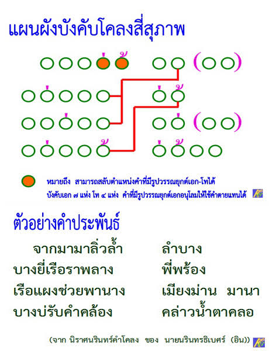

วิชาภาษาไทย

สำนวนไทยคือถ้อยคำหรือกลุ่มคำที่มีความหมายเป็นนัย ไม่ได้แปลตรงตามตัวอักษร แต่สื่อความหมายเชิงเปรียบเทียบที่ผ่านการกลั่นกรองจากประสบการณ์และวิถีชีวิตของคนไทยมาช้านาน สำนวนจำนวนมากมีที่มาจากธรรมชาติและการเกษตร เช่น "น้ำขึ้นให้รีบตัก" ที่หมายถึงการรีบคว้าโอกาสเมื่อมีมาถึง หรือ "ปลาหมอตายเพราะปาก" ที่เตือนให้ระมัดระวังการพูด สำนวนอื่น ๆ ยังสะท้อนความเชื่อและวิถีชุมชน เช่น "ไก่งามเพราะขน คนงามเพราะแต่ง" การเข้าใจสำนวนเหล่านี้ช่วยให้ผู้เรียนภาษาไทยเข้าใจความคิดและวัฒนธรรมของบรรพบุรุษ อีกทั้งยังทำให้การสื่อสารในชีวิตประจำวันมีสีสันและกระชับยิ่งขึ้น